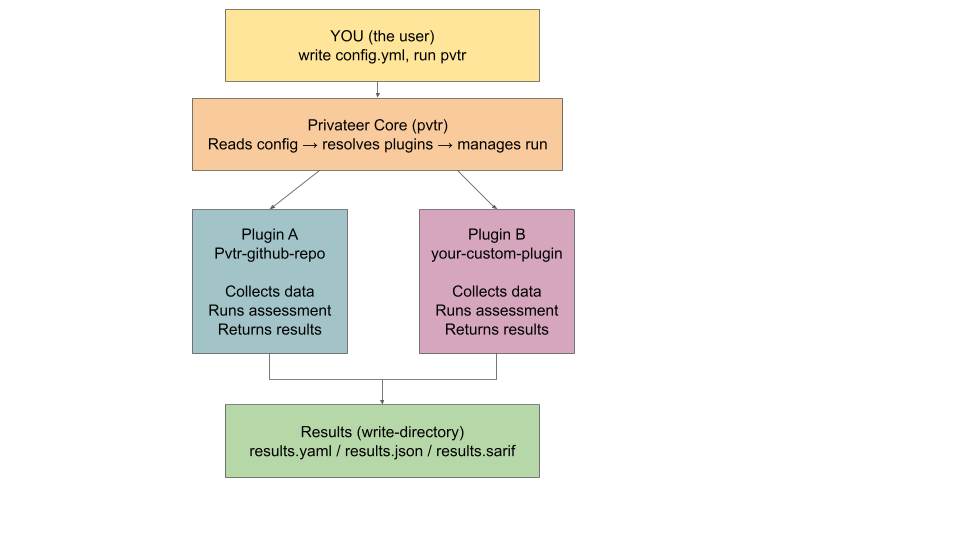

Introduction to Privateer
What Privateer is, why it exists, and how a validation run works.
Note: This document provides an introduction to Privateer. Before starting this document we assume that the readers have working familiarity and a general idea about command line basics, YAML, plugins, CI/CD and compliance control. If you are a beginner who is interested in just getting started, we recommend you visit our reference section for a general overview before reading this document.
Privateer is a validation framework that simplifies infrastructure testing and compliance validation. Privateer helps you validate resources against regulations, taxonomies, and standards by treating compliance as a data engineering problem rather than a manual reporting exercise.
It does this by running automated checks called plugins, collecting the results, and writing them out in a structured, machine-readable format that can be reviewed by humans or fed into other tools.
How Privateer is structured
Privateer is built around three core components that work together:
Privateer Core (pvtr) is the main binary you install and run. It reads your configuration file, figures out which plugins to run, launches them, collects their results, and writes output files. Importantly, Core contains no validation logic of its own.
Plugins are where all the validation logic lives. A plugin is a standalone binary that knows how to talk to one specific type of target, which can be a GitHub repository, an AWS service, a Kubernetes cluster, and so on. It collects data from that target, runs a series of checks against that data, and returns structured results back to Core. Plugins are built and distributed independently from Core, which means the community can build and share plugins without waiting for changes to the main project.
The Privateer SDK is a shared Go library that both pvtr and plugins depend on. It handles the communication between Core and plugins, manages configuration, standardizes logging, and defines the result format. Plugin authors import the SDK into their own Go project.

Fig 1. Illustrated Overview: How the Pieces Fit TogetherWhy Privateer exists
Most compliance processes break down at the same point: the gap between what a policy says and what a system actually does. A control catalog can define hundreds of requirements with precision, but verifying them against live infrastructure has traditionally meant manual checks, one-off scripts, or expensive tooling that organizations build and maintain themselves.
Privateer exists to close that gap, addressing three specific problems:
Translating controls into executable tests. Standards like the FINOS Common Cloud Controls and the OpenSSF OSPS Baseline define what compliant systems should look like. Privateer provides the tooling to turn those definitions into automated validation tests that run against real infrastructure.
Fitting natively into the Gemara model. Privateer is built to operate at the Evaluation layer of the Gemara GRC engineering model. This means you can generate executable plugin scaffolding directly from a Gemara Layer 2 control catalog, run it, and emit results as standardized Gemara Evaluation Logs.
Producing evidence that travels. Privateer outputs structured, schema-agnostic results in YAML, JSON, or SARIF. These formats can be consumed by CI/CD pipelines, security dashboards, and GRC platforms without transformation. Every run produces a timestamped, control-by-control record of what was checked and what the result was.
Key concepts overview
Privateer is built on several components that work together:
| Component | Role |
|---|---|
| Privateer SDK | Provides common logic shared by Privateer and all plugins |
| Privateer Core (pvtr) | The main executable that runs plugins based on user configuration |
| Plugin | Executes validation tests and returns results to Privateer Core |
| EvaluationSuite | A set of related data mapping control IDs and requirements to one or more assessment steps |
| AssessmentStep | A specialized function that analyzes a data payload provided at runtime |
Key features:
- Community-driven plugins crafted and maintained collaboratively by the community, or privately within your organization
- Comprehensive resource validation validate any number of resources against any number of standards in a single run
- Consistent machine-readable output standardized output (YAML, JSON, or SARIF) simplifies automation and integration
- Plugin generation generate plugin scaffolding from Gemara Layer 2 schema catalogs with a single command
How a validation run works
When you run pvtr run, here is what happens under the hood:
- Core reads your
config.yml, which tells it which services to validate and which plugin to use for each one. - For each service, Core locates the corresponding plugin binary in the binaries directory.
- Core launches the plugin as a separate subprocess and communicates with it over a local gRPC connection. This isolation means a plugin crash cannot bring down the entire run.
- The plugin connects to its target, for example, the GitHub API, and collects the data it needs.
- The plugin runs its EvaluationSuites, which are groups of related checks. Each individual check is called an AssessmentStep, a function that looks at the collected data and returns pass, fail, skip, or error.
- The plugin sends its results back to Core.
- Core writes the results to your output directory in YAML, JSON, or SARIF format, and exits with a code that reflects whether everything passed.
What Privateer validates against
Privateer does not invent its own rules. It validates against control catalogs, like the OSPS Baseline (Open Source Project Security Baseline) maintained by the OpenSSF, and Common Cloud Controls maintained by FINOS.
What the output looks like
After a run, Privateer writes results into a directory (default: evaluation_results/). For each service, you get a log file and a results file. The results file lists every control that was evaluated, whether it passed or failed, and the specific AssessmentStep messages that explain why.
Results can be written in three formats, which include YAML, JSON and SARIF.